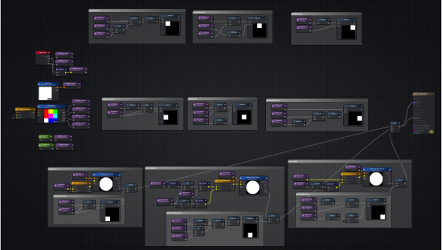
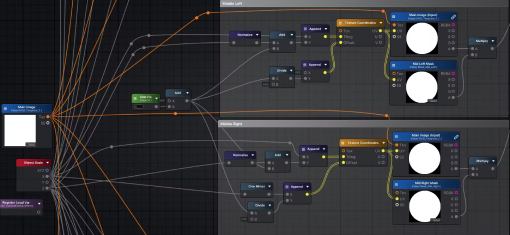
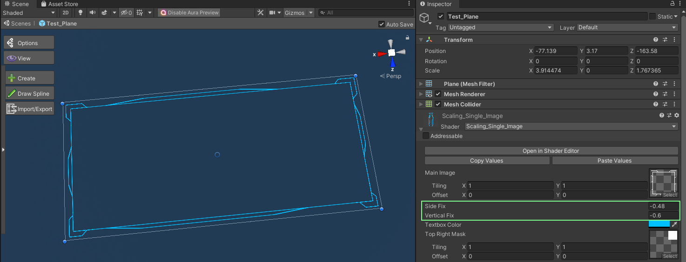

Textbox Shader
Skills
Unity, Amplify Shader Editor
Time
May 2022 - June 2022
XR Immersive Tech Internship
Contributions
Created a shader that takes a HUD design texture and scales it, automatically keeping corners proportionate.
Context
//01This shader is meant to work on a plane object and material without relying on Unity's Canvas. It can scale to any size to accomodate varying lengths of text and paragraphs.
Process
//02The shader works by using masks to display certain parts of the HUD texture, and then constraining them to the corners or edges. In my first iteration, I used separate textures for each of the corners. I was also taught a technique by Farbod Tabei, where I could to use a color mask (where the image is split into 3x3, and each section is a different color), to mask out a single image rather than splitting the HUD texture into multiple images.
Most of the shader is powered through calculations that use the Object Scale node to modify the Texture Coodinate Tiling and Offset. Below is a portion of the graph that shows the horizontal middle calculations.
The texbox texture can be changed directly through the material. Although the final shader uses multiple textures for the masks, the user only has to change the first texture. The horizontal and vertical middle sections can also be adjusted if needed.
Reflection
//03This shader was an interesting exercise as I practiced my maths skills. Although part of it was experimentation, I thought through and observed what changes were happening as the plane was being scaled. The colour masking technique was also an interesting one as I had not known about it before.